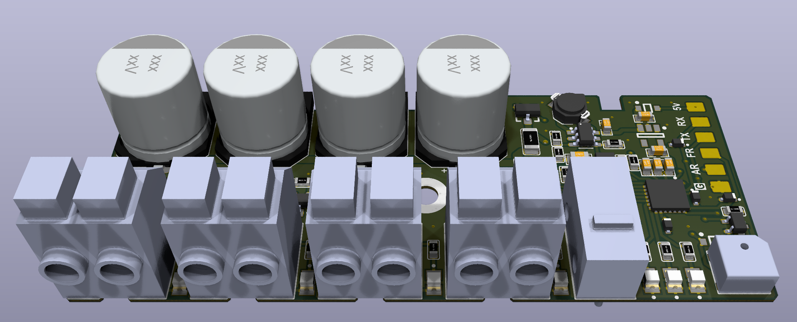
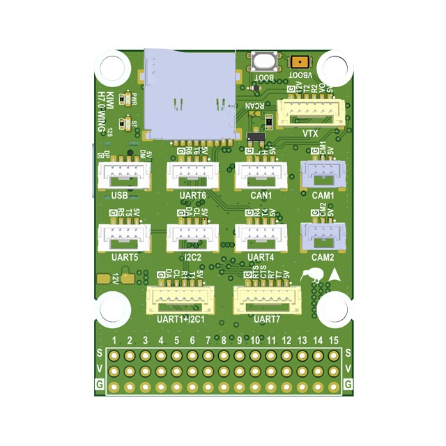
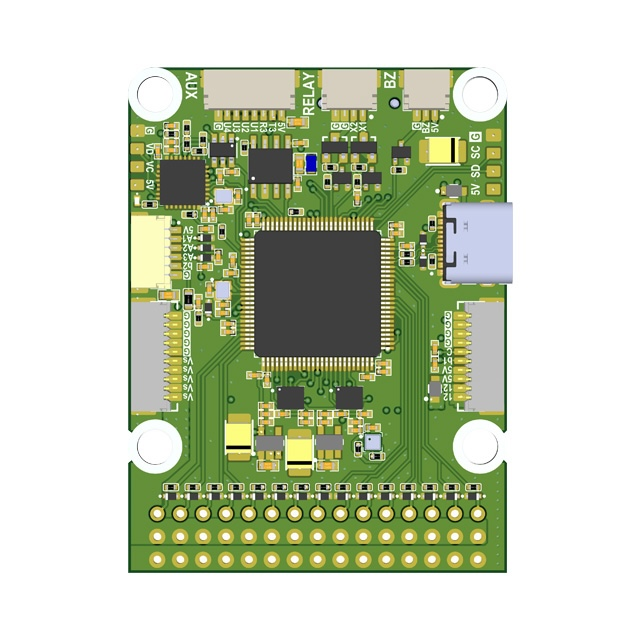
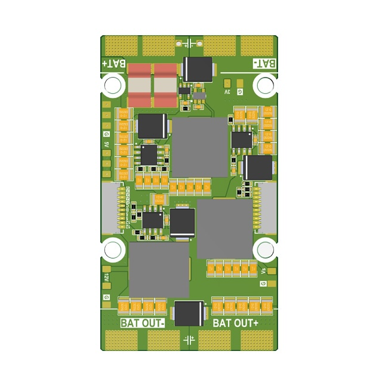

KIWI Flight Systems Manual
Welcome to the official documentation for KIWI Flight Systems. Engineered with precision. Inspired by a bird that never gave up.
Inside, you’ll find hardware specifications, pinouts, setup procedures, firmware integration guides, and system-level configuration references.
Whether you’re building from scratch, integrating custom sensors, or tuning for flight performance, this documentation is designed to support your development process from start to finish.
For feedback, corrections, or suggestions, please contact us at support@kaponga.nz
Welcome
UAV Electronics
Sensors
Flight Controllers
- Flight Controller - KIWI F405 12S
- Flight Controller - KIWI H743 12S
- Flight Controller - KIWI H743-Wing
Flight Controllers (Obsolete)
Kiwi Ground Station Kit

Призначення
Комплект наземної станції керування FPV дроном призначений для забезпечення безпеки операторів дронів.
Комплект є основою для побудови інфраструктури наземної станції.
Склад
Комплект складається з двох основних плат:
- Ground Board (плата оператора) — 1 шт
- Antenna Board (плата щогли) — 1 шт
- JR Board (адаптер для підключення до пульта RC)
- Технічна документація — 1 шт
- Кабель Cat5e або Cat6 не входить до комплекту
Плата оператора розміщується у бліндажі або в пункті керування дронами.
Плата щогли встановлюється поблизу антени.
З’єднання між ними здійснюється екранованим кабелем “вита пара” довжиною до 300 м.
Функції
- Перетворення керуючого сигналу S.Port → UART і назад.
- Передача аналогового відео CVBS з VRX до бліндажу.
- Підсилення відеосигналу та його перетворення в цифровий потік.
- Живлення передавального модуля та VRX до 26В.
Переваги Kiwi Ground Station Kit
- Надійна передача до 600 м без ретрансляторів.
- Один кабель передає живлення, відео, та керування.
- Можливість живлення щогли локально або по кабелю.
- Вбудовані DC-DC стабілізатори 5V, 9V, 12V на щоглі.
- 4 відеовиходи без затримки.
- Підтримка UART / CRSF.
- Мінімальна кількість з’єднань.
- Робота в діапазоні температур -20°C до +60°C.
Поширені сценарії використання
- Мобільні наземні станції для FPV-дронів
- Розвідувальні комплекси з щоглою до 10 м
- Модернізація старих систем зв’язку
- Системи спостереження у складних умовах
Технічні характеристики
| Параметр | Значення |
|---|---|
| З’єднання між платами | Екранована вита пара (T568B) |
| Максимальна довжина кабелю | до 300 м |
| Живлення по кабелю | до 150 м без підвищення |
| Робоча напруга живлення | 3S–12S (12–50 В) |
| Передача даних | UART / CRSF |
| Передача відео | CVBS (аналог) |
| Відеовиходи | 4 на Ground Board |
| Робоча температура | -20°C … +60°C |
| Стабілізатори на щоглі | 5V, 9V, 12V (DC-DC) |
Схема підключення
Ground Board:
- Video1 → FPV окуляри
- Video2 → Монітор
- Video3 → DVR
- Video4 → USB відео стрім (запис/трансляція)
- UART → Пульт або ПК
Antenna Board:
- TX (наприклад, ELRS TX)
- VRX (аналоговий приймач)
Зʼєднання:
Ground Board ↔ Antenna Board через екранований кабель Cat5e/Cat6 до 300 м
Живлення та втрати напруги
Стабілізація на щоглі
На платі Antenna Board встановлені DC-DC перетворювачі:
- 5V — для VRX
- 9V — для спеціальних пристроїв
- 12V — для передавача
Втрати на довгих кабелях (1А навантаження)
| Довжина | Втрати (6S) | Втрати (12S) | Напруга на щоглі (6S / 12S) |
|---|---|---|---|
| 100 м | ~3.6 В | ~3.6 В | 21.6 В / 46.8 В |
| 200 м | ~7.2 В | ~7.2 В | 18.0 В / 43.2 В |
| 300 м | ~10.8 В | ~10.8 В | 14.4 В / 39.6 В |
Інструкція з експлуатації
- Підключіть окуляри, монітор, DVR та USB відео стрім до Ground Board.
- Підключіть пульт або ПК через UART.
- Підключіть живлення 6S або 12S.
- З’єднайте Ground ↔ Antenna через кабель.
- Підключіть VRX та TX до Antenna Board.
- Увімкніть систему.
Рекомендації щодо прокладання і маскування кабелю
- Прокладати вздовж укриттів (дерева, рельєф, стіни).
- Уникати відкритих ділянок.
- Маскувати або фарбувати кабель.
- Фіксувати до землі або прокладати у кожусі.
- Біля щогли залишати запас.
- Перевіряти видимість з дронів.
Drobodrone: Плата для керування піротехнічними системами

Купити: на kiwidrone
Опис
Drobodrone — це універсальна та безпечна плата для керування піротехнічними навантаженнями (парашути, феєрверки, маркери тощо), призначена для інтеграції у складі FPV, UAV та інших безпілотних систем. Підтримує до 4 незалежних каналів підриву з високим рівнем безпеки.
Плата підтримує багаторазове використання і може бути повністю перепрограмована для кастомних сценаріїв.
Основні функції
-
4 незалежні канали підриву
Призначені для запуску різних піротехнічних систем. Кожен канал має апаратний ключ для запобігання хибному спрацюванню. -
Інтерфейси керування:
- PWM IN x2:
- ARM: активує систему (захист знято)
- FIRE: активує підрив (при активному ARM)
- PWM активується при ширині імпульсу 1800–2000us
- UART (SmartESAD):
- Для передачі телеметрії, контролю статусу та розширеного керування
- PWM IN x2:
-
Аудіо сигналізація:
Вбудований динамік інформує про поточний статус (наприклад: озброєно, відмова, успішне спрацювання). -
Світлова сигналізація:
Три яскраві LED інформують про стан системи: Ready / Armed / Fired / Error -
Механічна чека (запобіжник):
Фізичне роз’єднання для запобігання спрацювання під час транспортування чи підготовки. -
Інтерфейс живлення:
- Живлення від 5V
- Спрацювання елементів від 20V
- Захист від перенапруги, короткого замикання
Безпекові елементи
Система побудована за принципом багаторівневого захисту:
- Механічний вимикач-запобіжник — фізично розриває ланцюг.
- PWM-сигнал типу ARM — не дозволяє спрацювання без команди.
- Таймер самозахисту — автоматичне вимкнення при відсутності FIRE протягом заданого часу.
- Апаратні ключі — унеможливлюють коротке замикання або хибне спрацювання.
- Світлова та звукова індикація — для візуального та звукового контролю статусу.
Сумісність з автопілотами
Плата легко інтегрується з будь-яким автопілотом, який має PWM-виходи або UART-порти:
| Платформа | Метод інтеграції |
|---|---|
| ArduPilot | SERVOx_FUNCTION = 94/95, 51-66 |
| Betaflight | RESOURCE + SERVO конфігурація |
| iNAV | Servo Mixer + Modes |
| INDI/Custom | PWM або UART SmartESAD |
PWM-сигнал може бути поданий з пульта, автопілота або окремого модуля запуску.
Роз’єми та підключення
- Pyro Out x4: спеціальні піротехнічні конектори
- PWM IN x2: пади для пайки
- UART: пади для пайки
- 5V In: пади для живлення
- GND, Status LED, Speaker: окремі виходи
Плати мають великі, зручні контактні майданчики, які легко інтегрувати навіть у щільну проводку.
Кастомізація
Плата підтримує:
- Перепрошивку MCU через стандартний bootloader
- Зміну логіки ARM/FIRE
- Зміну таймерів, режимів індикації
- Підтримку альтернативних протоколів (за потреби)
Інтеграція: Швидкий старт
- Підключіть 5V живлення та землю
- Підключіть PWM ARM та PWM FIRE від автопілота
- Підключіть піротехнічні канали
- Встановіть механічну чеку
- На землі подайте ARM > FIRE у потрібний момент
- Перевірте LED та аудіо сигналізацію
- Опціонально підключіть UART до Companion Computer або логера
Примітка
Перед польотом завжди перевіряйте стан чека, сигналів, підключення піроканалів та акумулятора. Не залишайте плату в режимі ARM без нагляду.
Індикатори станів. Керування
Комбінація помаранчевого 🟠 та зеленого діодів 🟢 – індикатор поточного стану плати.
Червоний діод 🔴 сигналізує про помилку, яку має усунути оператор.
Помилки можливі в будʼякому зі станів плати. Щоб плата могла перейти в наступний стан, спершу треба усунути всі помилки.
- 🔴🔴🔴🔴🔴🔴 (постійно світиться) – плата не отримує валідний PWM ARM чи PWM ARM сигнал, можливо проблема пайки зʼєднання з польотним контроллером.
- 🔴🔴⚪️⚪️🔴🔴 (повільно блимає, 1 раз на секунду, 1гц) – треба відтиснути PWM ARM.
- 🔴⚪️🔴⚪️🔴⚪️ (швидко блимає, 3 рази на секунду, 3гц) – треба відтиснути PWM FIRE.
PWM: 0 ≤ invalid < 900 ≤ valid=0 ≤ 1800 < valid=1 < 2000 ≤ invalid
Для початку роботи:
- плата має “бачити пульт”: отримувати валідні PWM ARM та PWM FIRE (900 < pwm ширина < 2000)
- PWM ARM має бути у положені disarm (0, false, low, відтиснуте, вимкнене, ненатиснуте)
- PWM FIRE має бути у положені nofire (0, false, low, відтиснуте, вимкнене, ненатиснуте)
- вставити запобіжник (чеку)
Стани:
(1) Безпечно. Вітання 🔔:
🔴🔴🔴🔴🔴🔴
🟠🟠🟠🟠🟠🟠
🟢🟢🟢🟢🟢🟢
Триває секунду після подачі живлення, далі автоматично переходить в (2) Очікую Запобіжник
(2) Безпечно. Очікую запобіжник:
⚪️⚪️⚪️⚪️⚪️⚪️
🟢⚪️🟢⚪️🟢⚪️
Чекає поки оператор вставить чеку, далі переходить в (3) Запобіжник
(3) Безпечно. Запобіжник:
⚪️⚪️⚪️⚪️⚪️⚪️
🟢🟢🟢🟢🟢🟢
Чекає поки оператор усуне чеку, далі переходить в (4) Таймер
(4) Безпечно. Таймер:
⚪️⚪️⚪️⚪️⚪️⚪️
🟢🟢⚪️⚪️🟢🟢
Можливо вставити чеку щоб повернутись в (3) Запобіжник
Триває 60 секунд. Дає час відійти після усунення чеки. Далі переходить в (5) Очікую Заряд
(5) Уважно. Очікую Заряд:
🟠🟠⚪️⚪️🟠🟠
Можливо вставити чеку щоб повернутись в (3) Запобіжник
Чекає на PWM ARM від оператора, далі ~секунду заряджає 🔔 і переходить в (6) Заряджено
(6) Небезпечно. Заряджено 🔔:
🟠⚪️🟠⚪️🟠⚪️
Можливо вставити чеку щоб повернутись в (3) Запобіжник
Відтисни PWM ARM щоб розрядити і повернутись в (5) Очікую Заряд
Натисни PWM FIRE щоб зробити (7) Постріл.
(7) Небезпечно. Постріл:
🔴🔴🔴🔴🔴🔴
🟠🟠🟠🟠🟠🟠
🟢🟢🟢🟢🟢🟢
Постріл триває 100ms і автоматично переходить в (5) Очікую Заряд, який одразу переходить в (6) Заряджено якщо не відтискати PWM ARM.
Задля безпеки, для наступного пострілу треба відтиснути PWM FIRE, про що нагадає помилка 🔴⚪️🔴⚪️🔴⚪️.
4 незалежні канали підриву 1234 поділені на 2 групи по 2 канали в кожній 12 34.
Постріл підриває поточну активну группу (2 канали одночасно), і готує наступну групу для наступного пострілу. I так по-колу. Тобто постріли 1 2 3 4 5 6 здетонують канали 12 34 12 34 12 34.
Тобто послідовність роботи така:
підготовка: power arm=0 fire=0 вставили_чеку вийняли_чеку 60сек
робота: arm=1 fire=1 fire=0 fire=1
додому: fire=0 arm=0
Kiwi-RM3100 CAN Compass
Overview
The Kiwi-RM3100 is an external compass module based on the PNI RM3100 magnetometer, designed as a DroneCAN peripheral for ArduPilot-powered flight controllers. Built on the STM32F103 MCU, it connects to any CAN-enabled flight controller and provides high-precision heading data via the DroneCAN protocol.
The RM3100 sensor offers superior magnetic resolution and noise performance compared to common QMC5883L or HMC5843 compasses, making it well-suited for applications where accurate heading is critical — long-range wings, survey drones, and missions in magnetically noisy environments.
Firmware
- ArduPilot AP_Periph KiwiF103-RM3100.zip
Technical Specifications
Processor
- MCU: STM32F103xB (ARM Cortex-M0, 72 MHz)
- Flash: 128 KB
- Crystal: 8 MHz external oscillator
Compass Sensor
- Sensor: PNI RM3100
- Interface: SPI (1 MHz)
- Mounting orientation: ROTATION_PITCH_180
Communication
- CAN bus — primary interface, DroneCAN protocol
- CAN silent pin on PB5 (active low)
Serial Ports
| Port | Function | Pins |
|---|---|---|
| USART1 | GPS / general | PA9, PA10 |
| USART2 | General purpose | PA2, PA3 |
| USART3 | Telemetry | PB10, PB11 |
Additional Interfaces
- SPI2 spare bus (PB13/PB14/PB15) — available for additional sensors
- AUX analog input on PA0
Indicators
- Status LED on PC13 (active low)
ArduPilot Configuration
The Kiwi-RM3100 runs ArduPilot AP_Periph firmware. Once connected to the CAN bus, the flight controller auto-detects the compass.
Flight Controller Parameters
Enable CAN on the flight controller:
CAN_P1_DRIVER = 1
CAN_D1_PROTOCOL = 1 (DroneCAN)
The compass should appear automatically. Verify with:
COMPASS_DEV_ID
Pinout
CAN Connector
| Pin | Function |
|---|---|
| 1 | CAN_H |
| 2 | CAN_L |
| 3 | VCC |
| 4 | GND |
Ініціатор для мін універсальний

Призначення
Ініціатор споряджається у протитанкові або протипіхотні міни типу ПOM, ПМН-3, ОЗМ-72, МОН-50, ТМ-62, ПТМ-3, ПТМ-4 тощо.
Основні задачі
- мінування під’їзних шляхів наступу ворожих військ;
- міна-пастка;
- підрив міни при скиді з БПЛА.
Електроніка міни забезпечує безпеку сапера, який встановлює міну вручну, або пілота дрона, який виконує віддалений скид міни, за рахунок двох (у випадку підключення приймача команд – трьох) запобіжників.
Міна проектується з метою унеможливити її знешкодження крім фізичного дистанційного знищення. Вона реагує на найменші рухи чи повороти корпусу, а також наближення феромагнітних предметів (бронежилет, зброя, інструменти тощо) при спробі знищення.
Електроніка може встановлюватись у корпуси стандартних серійних мін, щоб ворожий сапер вважав, що він має справу з відомою міною натискної дії (пастка для сапера).
Встановлення опційного приймача команд дозволяє підірвати міну при наближенні до місця її розташування групи ворожої піхоти чи техніки. При переході у наступ можливість віддаленого керування дозволяє оперативно розмінувати шлях наступу дружніх підрозділів.
Переваги
- кілька датчиків цілі;
- можливість зміни програми відповідно до задач;
- віддалене керування (опція);
- неможливість деактивації без пульта;
- можливість пастки з відкладеним вибухом.
Конструкція
- корпус;
- кришка;
- плата з електронними компонентами (16×44×10 мм);
- механічний запобіжник;
- елемент живлення;
- приймальна антена (опціонально);
- вибухова речовина;
- вражаючі елементи;
- електродетонатор.
Датчики цілі
Спрацювання ініціатора відбувається у випадках:
- натискання (8–20 кг);
- замикання сухого контакту;
- переміщення, поворот або нахил міни;
- удар з будь-якого напрямку;
- спроба розібрати корпус;
- зміна магнітного поля, у тому числі наближення феромагнітних об’єктів та металошукачів;
- сигнал від пульта керування (опціонально);
- самознищення за таймером та при розряді батареї нижче критичного рівня.
Керування з пульта: напряму або через ретранслятор. Можливий вибірковий підрив або підрив групи мін.
Запобіжники
- Механічний – чека.
- Електронний – таймер затримки зведення, програмується від 2 хвилин до кількох годин. Таймер обнуляється при найменших рухах міни. Для переведення у бойовий стан вимагається, щоб міна лежала нерухомо протягом усього часу роботи таймера. Це дозволяє витягнути чеку і встановлювати міну вручну або за допомогою дрона без ризику підриву.
- Електронний – активація з пульта (за наявності приймача).
Живлення
- літієва батарея типу 18650 або 2–3 елементи АА/ААА;
- струм споживання – менше 1 мА;
- час безперервної роботи у режимі очікування: до 30 діб залежно від типу батареї;
- при комплектуванні приймачем команд – до 10 діб;
- можливе самознищення при падінні напруги нижче критичного рівня.
Установка
- вручну;
- скид з БПЛА;
- доставка наземним дроном.
Принцип роботи
Після установки або скиду, акселерометр та магнетометр запам’ятовують поточне положення міни відносно вектора прискорення та магнітного поля Землі.
- Зміна положення фіксується акселерометром,
- поворот – гіроскопом,
- зміна магнітного поля – магнетометром.
Перевищення встановлених порогів призводить до підриву.
Заплановані удосконалення у версії 2.0
- інтегрований приймач команд у складі плати;
- покращений алгоритм енергозбереження;
- нові батареї типу LiCOCl₂ з температурним діапазоном від -60 до +80 °C та строком зберігання до 10 років.
Universal initiator for land mines PyroMine
Purpose
The initiator is designed for anti-tank and anti-personnel mines such as POM, PMN-3, OZM-72, MON-50, TM-62, PTM-3, PTM-4, etc.
Main tasks
- mining the supply lines of enemy troops;
- trap mine;
- detonation of a mine when dropped from a UAV.
The electronics ensure the safety of the sapper who installs the mine manually or the UAV pilot who performs the drop, thanks to two fuses (or three with command receiver).
The initiator is designed to make neutralization impossible except by remote destruction. It reacts to even slight movements, tilts, or the approach of ferromagnetic objects.
It can be mounted into standard mine bodies so that enemy sappers mistake it for a known pressure mine (booby trap).
With an optional command receiver, the mine can be detonated upon the approach of enemy infantry or vehicles. During an offensive, remote control allows quick clearance of friendly paths.
Advantages
- multiple target sensors;
- reprogrammable for specific missions;
- remote control (optional);
- impossible to deactivate without remote unit;
- trap with delayed explosion.
Design
- body;
- cover;
- PCB with electronics (16×44×10 mm);
- mechanical fuse;
- battery;
- receiving antenna (optional);
- explosive charge;
- fragments;
- electric detonator.
Target sensors
The initiator is triggered by:
- pressing (8–20 kg);
- dry contact closing;
- moving, turning or tilting the mine;
- impact from any direction;
- disassembly attempt;
- magnetic field changes (ferromagnetic objects, metal detectors);
- remote signal (optional);
- self-destruction on timer or low battery.
Remote control: direct or via repeater. Selective or grouped detonation.
Fuses
- Mechanical – safety pin.
- Electronic – arming delay timer (2 minutes to several hours). Reset on any movement, requires the mine to stay still to arm.
- Electronic – remote activation (if receiver is installed).
Power
- lithium 18650 or 2–3 AA/AAA cells;
- consumption <1 mA;
- standby operation up to 30 days;
- with command receiver – up to 10 days;
- optional self-destruction at critical voltage.
Deployment
- manual;
- UAV drop;
- ground drone delivery.
Operation principle
After deployment, the accelerometer and magnetometer record initial orientation and field values.
- accelerometer detects movement,
- gyroscope detects rotation,
- magnetometer detects magnetic changes.
Threshold exceedance results in detonation.
Planned improvements in version 2.0
- integrated command receiver on PCB;
- enhanced power-saving algorithms;
- new LiCOCl₂ batteries with -60 to +80 °C operating range and 10-year shelf life.
Flight Controller Board: KIWI F405 12S Configuration

Description
KIWI F4.0 is a versatile flight controller based on the STM32F405, designed for FPV, wings, and autonomous platforms. The controller combines precision inertial sensing, OSD support, built-in Blackbox, and relay outputs for controlling external modules. Support for both Betaflight and ArduPilot allows this board to be used in a wide range of applications.
KIWI F4.0 is a reliable platform for building FPV drones, aircraft, and specialized autonomous systems with full support for Betaflight and ArduPilot. Thanks to flexible relay, sensor, and telemetry connectivity, the controller is ready for real-world mission use.
Firmware
- ArduPilot 4.6.2 KiwiF405-12S.zip
- Betaflight 4.5.3 BF-4.5.3.zip
- Betaflight 2025.12.0 BF-2025.12.0-beta.zip
- Betaflight 2026.12.3 BF-2026.12.3-alpha.zip
Pinout and Diagrams

{kind=link}
Features
- Industrial-grade IMU Invensense ICM-42688P with external clock
- Bosch BMP388 barometer for altitude measurement
- Integrated 128Mbit Blackbox flash memory (W25Q128FV)
- MAX7456 OSD chip for overlaying telemetry on analog video
- High-precision voltage and current monitoring via ADC (VBAT, CURRENT)
- GPIO-controlled relay outputs for powering VTX, cameras, or pyrotechnic systems
- 4 motor PWM outputs (DShot, bidirectional on M1 & M3) + 6 auxiliary channels
- USB Type-C with DFU firmware flashing support
- Full CRSF / ELRS telemetry support (RSSI, LQ, SNR, Power)
Technical Specifications
- MCU: STM32F405RG (168 MHz, 1024 KB flash)
- Crystal: 16 MHz external oscillator
- IMU: ICM-42688P (SPI2, rotation ROLL_180_YAW_90)
- Barometer: BMP388 (I2C1, address 0x76)
- OSD: MAX7456 (SPI1)
- Flash Memory: W25Q128FV 128 Mbit (SPI3)
- Dimensions: 36×36 mm, mounting 30.5×30.5 mm
- LED: PC2 (active low)
Serial Ports
| Port | ArduPilot | Default Protocol | Pins | Notes |
|---|---|---|---|---|
| USB | SERIAL0 | MAVLink | PA11, PA12 | OTG FS, Type-C |
| USART1 | SERIAL1 | RC Input | PB6, PB7 | |
| USART2 | SERIAL2 | MAVLink2 (460800) | PA2, PA3 | Alt: RC via TIM9 |
| USART3 | SERIAL3 | GPS (115200) | PC10, PC11 | |
| UART4 | SERIAL4 | SmartAudio | PA0, PA1 | VTX control |
| UART5 | SERIAL5 | ESC Telemetry | PC12, PD2 | NODMA |
GPIOs, Relays, and AUX
Dedicated GPIO Pads
| Pad | Pin | GPIO | Default | ArduPilot Relay Config |
|---|---|---|---|---|
| F+ | PC14 | 103 | RELAY1 | RELAY1_PIN=103 (hwdef default) |
| U1 | PA4 | 100 | Output LOW | RELAY2_PIN=100, RELAY2_FUNC=1 |
| U3 | PC15 | 101 | Output LOW | RELAY3_PIN=101, RELAY3_FUNC=1 |
| U2 | PA10 | 102 | Output LOW | RELAY4_PIN=102, RELAY4_FUNC=1 |
| LED | PC2 | 90 | Status LED | — |
RELAY1 (F+ pad) works out of the box — pre-configured in hwdef. U1/U2/U3 need params set to use as relays.
PWM Outputs
| Output | Pin | GPIO | Timer | Function | DShot Bidir |
|---|---|---|---|---|---|
| PWM1 | PC9 | 50 | TIM8_CH4 | Motor 1 | Yes |
| PWM2 | PC8 | 51 | TIM8_CH3 | Motor 2 | No |
| PWM3 | PC7 | 52 | TIM8_CH2 | Motor 3 | Yes |
| PWM4 | PC6 | 53 | TIM8_CH1 | Motor 4 | No |
| PWM5 | PA8 | 54 | TIM1_CH1 | AUX 1 | No |
| PWM6 | PA9 | 55 | TIM1_CH2 | AUX 2 | No |
| PWM7 | PB11 | 56 | TIM2_CH4 | AUX 3 | No |
| PWM8 | PB10 | 57 | TIM2_CH3 | AUX 4 | No |
| PWM9 | PB1 | — | TIM3_CH4 | AUX 5 | No |
| PWM10 | PB0 | — | TIM3_CH3 | AUX 6 | No |
PWM9/PWM10 have no GPIO ID in hwdef — PWM only. Other PWM pins can be reassigned to GPIO via
SERVOn_FUNCTION=0+RELAYn_PIN=<gpio>.
Relay Usage
MAVProxy:
param set RELAY2_PIN 100
param set RELAY2_FUNC 1
relay set 0 1 # RELAY1 ON (F+ pad HIGH)
relay set 0 0 # RELAY1 OFF
relay set 1 1 # RELAY2 ON (U1 pad HIGH)
Mission waypoint: DO_SET_RELAY — relay number 0-based (0=RELAY1), setting 1=ON / 0=OFF.
Lua:
relay:toggle(0) -- toggle RELAY1
relay:on(1) -- RELAY2 ON
relay:off(1) -- RELAY2 OFF
All GPIO pads default LOW on boot. Use RELAY_DEFAULT params to set initial state.
Power Monitoring
- Battery Voltage: PC0 (ADC1 IN10)
- Battery Current: PC1 (ADC1 IN11)
- Default monitor type: Analog (type 4)
Sensor Calibration
| Parameter | ArduPilot | Betaflight |
|---|---|---|
| Voltage scale | BATT_VOLT_MULT = 21.0 | voltage_meter_scale = 210 |
| Current scale | BATT_AMP_PERVLT = 142.9 | current_meter_scale = 1052 |
Battery Voltage Thresholds (ArduPilot)
| Parameter | 6S | 8S | 12S |
|---|---|---|---|
| Full charge | 25.2 V | 33.6 V | 50.4 V |
BATT_ARM_VOLT | 22.2 | 29.6 | 44.4 |
BATT_LOW_VOLT | 21.0 | 28.0 | 42.0 |
BATT_CRT_VOLT | 19.8 | 26.4 | 39.6 |
SPI Bus Assignment
| Bus | Device | Chip Select | Speed |
|---|---|---|---|
| SPI1 | MAX7456 | PC3 | 10 MHz |
| SPI2 | ICM-42688P | PC5 | 2/8 MHz |
| SPI3 | W25Q128FV | PC13 | 104 MHz |
I2C Bus
- I2C1: PB8 (SCL), PB9 (SDA) — BMP388 barometer at 0x76, external compass probing
Debug
- SWDIO: PA13
- SWCLK: PA14
Premium Features
Kiwi OSD Pinio Elements (Betaflight 2025.12+)
Custom OSD text elements that change based on PINIO switch state (User 1–4 boxes). Each element displays configurable ON/OFF text labels, useful for showing relay status, arming indicators, or mission state on the OSD.
CLI Settings
| Setting | Description |
|---|---|
kiwi_osd_pinioN_text_on | Text shown when User N switch is active |
kiwi_osd_pinioN_text_off | Text shown when User N switch is inactive (use - to hide) |
kiwi_osd_pinioN_pos | OSD screen position (341 = hidden) |
Where N is 1–4 corresponding to PINIO1–PINIO4.
Example Setup
# Show SAFE/ARMED on OSD driven by User 2 switch
set kiwi_osd_pinio2_text_on = ARMED
set kiwi_osd_pinio2_text_off = SAFE
set kiwi_osd_pinio2_pos = 2242
# Show PARACHUTE only when User 3 switch is active, hidden when off
set kiwi_osd_pinio3_text_on = PARACHUTE
set kiwi_osd_pinio3_text_off = -
set kiwi_osd_pinio3_pos = 2274
# Assign User 2 to AUX3 switch (high position)
aux 3 41 3 1700 2100 0 0
# Assign User 3 to AUX2 switch (high position)
aux 4 42 2 1700 2100 0 0
save
Hardware Notes
On the KIWI F405 12S, only PINIO4 (PA4 / RELAY1) has a physical GPIO pin. PINIO1–3 are defined as NONE in the hardware config, but the OSD elements still work — the User box toggles the logical state, and the OSD text updates accordingly. No physical pin is needed for OSD-only use.
Default Parameters
- Frame: Quadcopter (FRAME_CLASS=1, FRAME_TYPE=3 BetaFlight X reversed)
- Motor protocol: DShot (MOT_PWM_TYPE=5)
- BLHeli passthrough: enabled (SERVO_BLH_AUTO=1, mask=15)
- Flight mode channel: CH8
- VTX: enabled, band 6, channel 4, freq 1240
KiwiH743 12S Flight Controller

Overview
The KiwiH743 is a high-performance flight controller based on the STM32H743 MCU, designed for advanced UAV applications. It combines powerful processing, flexible connectivity, and rich sensor support, optimized for ArduPilot firmware.
It is the next generation of the KiwiF405 family, offering 2MB flash, 480 MHz CPU clock, extended UART/SPI/I2C buses, and support for dual IMUs, barometer, and OSD integration.
Firmware
- ArduPilot KiwiH743.zip
- ArduPilot (SD card) KiwiH743-sdcard.zip
- Betaflight
Technical Specifications
Processor, Memory, Clock
- MCU: STM32H743VIT6
- Architecture: ARM Cortex-M7
- Max Frequency: 480 MHz
- Flash: 2048 KB (2 MB)
- FPU: Single-precision, hardware accelerated
- Crystal Frequency: 16 MHz external oscillator
- DataFlash: 16 MB
- OSD Type: Integrated (MAX7456-compatible)
- External SD card slot via SPI
Connectivity
USB, UART, SPI Peripherals
- USB OTG1 (Mavlink)
- USB OTG2 HiSpeed (Serial)
- 7 hardware UARTs
- Dedicated functions:
- UART8: RC input (SBUS/DSM)
- Others available for GPS, telemetry, peripherals
- SPI1 bus available for external peripherals
Sensors
- IMU1: ICM-42688P
- IMU2: ICM-45686
- Barometer: BMP388
- External compass support: yes (I²C probing enabled)
GPIOs, Relays, and AUX
Dedicated GPIO Pads
| Pad | Pin | GPIO | Default | ArduPilot Relay Config |
|---|---|---|---|---|
| CAM SW | PA8 | 100 | RELAY1 | RELAY1_PIN=100 (hwdef default) |
| RELAY1 | PD4 | 101 | Output LOW | RELAY2_PIN=101, RELAY2_FUNC=1 |
| RELAY2 | PB7 | 102 | Output LOW | RELAY3_PIN=102, RELAY3_FUNC=1 |
| LED | PE4 | 90 | Status LED | — |
Note:
RELAY1_PINdefaults to GPIO 100 (Camera Switch pad, PA8), not the pad labeled “RELAY1” (PD4, GPIO 101). This is set in the hwdef. Adjust if your wiring differs.
PWM Outputs
RC input: SBUS/DSM on PE11.
| Output | Pin | GPIO | Timer | Function | DShot Bidir |
|---|---|---|---|---|---|
| PWM1 | PC6 | 50 | TIM3_CH1 | Motor 1 | Yes |
| PWM2 | PC7 | 51 | TIM3_CH2 | Motor 2 | Yes |
| PWM3 | PC8 | 52 | TIM3_CH3 | Motor 3 | Yes |
| PWM4 | PC9 | 53 | TIM3_CH4 | Motor 4 | Yes |
| PWM5 | PD12 | 54 | TIM4_CH1 | Motor 5 | No |
| PWM6 | PD13 | 55 | TIM4_CH2 | Motor 6 | No |
| PWM7 | PD14 | 56 | TIM4_CH3 | Motor 7 | No |
| PWM8 | PD15 | 57 | TIM4_CH4 | Motor 8 | No |
| PWM9 | PA0 | 58 | TIM5_CH1 | Servo 1 | No |
| PWM10 | PA1 | 59 | TIM5_CH2 | Servo 2 | No |
| PWM11 | PA2 | 60 | TIM5_CH3 | Servo 3 | No |
| PWM12 | PA3 | 61 | TIM5_CH4 | Servo 4 | No |
| PWM13 | PE13 | 62 | TIM1_CH3 | Servo 5 | No |
| PWM14 | PB8 | 63 | TIM16_CH1 | Servo 6 | No |
PWM pins can be reassigned to GPIO via SERVOn_FUNCTION=0 + RELAYn_PIN=<gpio>.
Spare ADC
| Pin | Function |
|---|---|
| PC1 | SPARE2_ADC1 (analog input only) |
Relay Usage
MAVProxy:
param set RELAY2_PIN 101
param set RELAY2_FUNC 1
relay set 0 1 # RELAY1 ON (CAM SW pad HIGH)
relay set 0 0 # RELAY1 OFF
relay set 1 1 # RELAY2 ON (RELAY1 pad HIGH)
Mission waypoint: DO_SET_RELAY — relay number 0-based (0=RELAY1), setting 1=ON / 0=OFF.
Lua:
relay:toggle(0) -- toggle RELAY1 (CAM SW)
relay:on(1) -- RELAY2 ON (RELAY1 pad)
relay:off(1) -- RELAY2 OFF
All GPIO pads default LOW on boot. Use RELAY_DEFAULT params to set initial state.
Power Monitoring
- Battery Voltage: PC5 (ADC1 IN8)
- Battery Current: PB1 (ADC1 IN5)
- Default monitor type: Analog
Sensor Calibration
| Parameter | ArduPilot | Betaflight |
|---|---|---|
| Voltage scale | BATT_VOLT_MULT = 21.0 | voltage_meter_scale = 210 |
| Current scale | BATT_AMP_PERVLT = 142.9 | current_meter_scale = 100 |
Battery Voltage Thresholds (ArduPilot)
| Parameter | 6S | 8S | 12S |
|---|---|---|---|
| Full charge | 25.2 V | 33.6 V | 50.4 V |
BATT_ARM_VOLT | 22.2 | 29.6 | 44.4 |
BATT_LOW_VOLT | 21.0 | 28.0 | 42.0 |
BATT_CRT_VOLT | 19.8 | 26.4 | 39.6 |
Debug & Development
- SWD Pins:
PA13: JTMS-SWDIOPA14: JTCK-SWCLK
LEDs & Indicators
- Status LED:
PE4(active-low)
Advanced Features
- Visual odometry integration: enabled
- External AHRS support
- GPS moving baseline enabled
- Gyro FFT enabled (vibration analysis)
- INS temperature calibration enabled
- Guided (NoGPS) supported
Default Frame & Modes
- Default frame: Quadcopter X (FRAME_TYPE=12, Betaflight-X motor order)
- Flight modes enabled by default:
- Guided (NoGPS)
- FlowHold
- OpticalFlow
Pinouts and schematics
ESC Pins
1 - ESC Telemetry
2 - ESC Current
3 - Motor4
4 - Motor3
5 - Motor2
6 - Motor1
7 - VBAT
8 - GND

KiwiH743-Wing Flight Controller
Overview
The KiwiH743-Wing is a Pixhawk-format flight controller system consisting of two boards: a Flight Controller and a Power Distribution Board (PDB). Designed for expendable quadcopters and long-range fixed-wing drones. Ready to use with Rover, Wing, Quadcopter, and Hexacopter configurations.
Firmware
- ArduPilot KiwiH743-wing.zip
- Betaflight
Flight Controller


Built around the STM32H743, the flight controller provides dual IMUs with hardware signal filtering, dual switchable camera inputs, and relay-controlled power outputs.
Features
- STM32H743 MCU
- 12S power supply
- 5V, 6/7V, 9/12V 5A BECs
- ICM-42688P and ICM-45686 with power and hardware signal filtering
- BMP388 barometer
- Dual camera input, switchable
- 8 motors
- 7 servos
- 5 UARTs, UART7 with flow control
- 1 SPI
- 1 I2C
- 5 GPIOs
- 2 relay outputs, 9/12V switch
- Analog + digital VTX output
- STM32G4 OSD
- SD card via SDMMC
- 36.0 х 39.0 mm mounting holes
- 40 x 42 mm board dimensions
Power Distribution Board (PDB)

Features
- 4S–12S power input
- 5V 5A output
- 5/6/7/9V 5A adjustable output
- 12V 5A output
- 3.3V 1A output
- 0.1 mOhm current sensor
- 36 x 39 mm mounting holes
- 42 x 75 mm board dimensions
Technical Specifications
Processor
| Parameter | Value |
|---|---|
| MCU | STM32H743 |
| Architecture | ARM Cortex-M7 |
| Max Frequency | 480 MHz |
| Flash | 2048 KB (2 MB) |
| Crystal | 16 MHz external oscillator |
Sensors
| Sensor | Part | Notes |
|---|---|---|
| IMU 1 | ICM-42688P | External clock, hardware filtered |
| IMU 2 | ICM-45686 | Hardware filtered |
| Barometer | BMP388 | |
| OSD | STM32G4 | Analog video overlay |
Power
| Rail | Voltage | Current |
|---|---|---|
| Input | 12S (up to ~50V) | |
| BEC 1 | 5V | 5A |
| BEC 2 | 6/7V | 5A |
| BEC 3 | 9/12V | 5A |
Mechanical
| Parameter | Value |
|---|---|
| Board size | 39 x 39 mm |
| Mounting holes | 30.5 x 30.5 mm |
UART Mapping
| Serial | UART | TX Pin | RX Pin | Notes |
|---|---|---|---|---|
| Serial 1 | UART1 | PB14 | PB15 | |
| Serial 2 | UART2 | PD5 | PD6 | |
| Serial 3 | UART3 | PD8 | PD9 | |
| Serial 4 | UART4 | PD1 | PD0 | |
| Serial 5 | UART5 | PB13 | PB12 | |
| Serial 6 | UART6 | PC6 | PC7 | |
| Serial 7 | UART7 | PE8 | PE7 | RTS: PE9, CTS: PE10 |
| Serial 8 | UART8 | PE1 | PE0 | OSD UART |
GPIOs, Relays, and AUX
Dedicated GPIO Pads
| Pad | Pin | GPIO | Default | ArduPilot Relay Config |
|---|---|---|---|---|
| CAM SW | PE2 | 100 | RELAY1 | RELAY1_PIN=100 (hwdef default) |
| RELAY 1 | PD3 | 101 | Output LOW | RELAY2_PIN=101, RELAY2_FUNC=1 |
| RELAY 2 | PD4 | 102 | Output LOW | RELAY3_PIN=102, RELAY3_FUNC=1 |
| AUX 1 | PD7 | 105 | Output LOW | RELAY4_PIN=105, RELAY4_FUNC=1 |
| AUX 2 | PB3 | 106 | Output LOW | RELAY5_PIN=106, RELAY5_FUNC=1 |
| AUX 3 | PE5 | 107 | Output LOW | — |
| AUX 4 | PC13 | 103 | Output LOW | Shared with VIDEO BOOT |
| VID NRST | PE3 | 104 | Output LOW | RELAY6_PIN=104 (hwdef default) |
| CAN SIL | PE4 | 70 | Output LOW | CAN silent mode |
| BUZZER | PA15 | 32 | Alarm | — |
| LED | PD11 | 90 | Status LED | — |
Note:
RELAY1_PINdefaults to GPIO 100 (Camera Switch, PE2).RELAY6_PINdefaults to GPIO 104 (VIDEO_NRST, PE3 — STM32G4 OSD reset, active low). RELAY 1/2 pads are 9/12V switched outputs.
PWM Outputs
| Output | Pin | GPIO | Timer | Function |
|---|---|---|---|---|
| SERVO 1 | PA10 | 50 | TIM1_CH3 | Motor 1 |
| SERVO 2 | PA9 | 51 | TIM1_CH2 | Motor 2 |
| SERVO 3 | PA8 | 52 | TIM1_CH1 | Motor 3 |
| SERVO 4 | PD15 | 53 | TIM4_CH4 | Motor 4 |
| SERVO 5 | PD14 | 54 | TIM4_CH3 | Motor 5 |
| SERVO 6 | PD13 | 55 | TIM4_CH2 | Motor 6 |
| SERVO 7 | PD12 | 56 | TIM4_CH1 | Motor 7 |
| SERVO 8 | PB1 | 57 | TIM3_CH4 | Motor 8 |
| SERVO 9 | PB0 | 58 | TIM3_CH3 | Servo 1 |
| SERVO 10 | PB4 | 59 | TIM3_CH1 | Servo 2 |
| SERVO 11 | PB5 | 60 | TIM3_CH2 | Servo 3 |
| SERVO 12 | PA3 | 61 | TIM5_CH4 | Servo 4 |
| SERVO 13 | PA2 | 62 | TIM5_CH3 | Servo 5 |
| SERVO 14 | PA1 | 63 | TIM5_CH2 | Servo 6 |
| SERVO 15 | PA0 | 64 | TIM5_CH1 | Servo 7 |
PWM pins can be reassigned to GPIO via SERVOn_FUNCTION=0 + RELAYn_PIN=<gpio>.
Relay Usage
MAVProxy:
param set RELAY2_PIN 101
param set RELAY2_FUNC 1
relay set 0 1 # RELAY1 ON (CAM SW HIGH)
relay set 0 0 # RELAY1 OFF
relay set 1 1 # RELAY2 ON (RELAY1 pad HIGH)
Mission waypoint: DO_SET_RELAY — relay number 0-based (0=RELAY1), setting 1=ON / 0=OFF.
Lua:
relay:toggle(0) -- toggle RELAY1 (CAM SW)
relay:on(1) -- RELAY2 ON (RELAY1 pad)
relay:off(1) -- RELAY2 OFF
All GPIO pads default LOW on boot. Use RELAY_DEFAULT params to set initial state.
Power Monitoring
| Function | Pin | ADC |
|---|---|---|
| Battery voltage | PC5 | ADC1 IN8, scale /21 |
| Battery current | PC4 | ADC1 IN4 |
| VBAT2 | PC3_C | ADC3 IN1, scale /21 |
| ADC 1 | PC1 | ADC1 IN11 |
| ADC 2 | PC0 | ADC1 IN10 |
| ADC 3 | PC2_C | ADC3 IN0 |
Sensor Calibration
| Parameter | ArduPilot | Betaflight |
|---|---|---|
| Voltage scale | BATT_VOLT_MULT = 21.0 | voltage_meter_scale = 210 |
| Current scale | BATT_AMP_PERVLT = 142.9 | current_meter_scale = 100 |
Battery Voltage Thresholds (ArduPilot)
| Parameter | 6S | 8S | 12S |
|---|---|---|---|
| Full charge | 25.2 V | 33.6 V | 50.4 V |
BATT_ARM_VOLT | 22.2 | 29.6 | 44.4 |
BATT_LOW_VOLT | 21.0 | 28.0 | 42.0 |
BATT_CRT_VOLT | 19.8 | 26.4 | 39.6 |
Buses
SPI
| Bus | CLK | MISO | MOSI | Usage |
|---|---|---|---|---|
| SPI 1 | PA5 | PA6 | PA7 | IMU 1 (CS: PB2) |
| SPI 4 | PE12 | PE13 | PE14 | IMU 2 (CS: PE15) |
I2C
| Bus | SCL | SDA |
|---|---|---|
| I2C 1 | PB6 | PB7 |
| I2C 2 | PB10 | PB11 |
FDCAN
| Function | Pin |
|---|---|
| CAN RX | PB8 |
| CAN TX | PB9 |
| CAN Silent | PE4 |
SDMMC (SD Card)
| Function | Pin |
|---|---|
| D0 | PC8 |
| D1 | PC9 |
| D2 | PC10 |
| D3 | PC11 |
| CLK | PC12 |
| CMD | PD2 |
Other
| Function | Pin | Notes |
|---|---|---|
| USB D- | PA11 | |
| USB D+ | PA12 | |
| SWDIO | PA13 | Debug |
| SWDCLK | PA14 | Debug |
| Buzzer | PA15 | TIM2 CH1 |
| LED | PD11 | Status |
| IMU clock | PE6 | TIM15 CH2, external clock for IMUs |
| Video NRST | PE3 | OSD/VTX reset |
| Video BOOT | PC13 | Shared with AUX 4 |
Full Pinout Reference
| Pin | Function | Alternate |
|---|---|---|
| PA0 | SERVO 15 | TIM5 CH1 |
| PA1 | SERVO 14 | TIM5 CH2 |
| PA2 | SERVO 13 | TIM5 CH3 |
| PA3 | SERVO 12 | TIM5 CH4 |
| PA4 | IMU 1 INT | |
| PA5 | SPI 1 CLK | |
| PA6 | SPI 1 MISO | |
| PA7 | SPI 1 MOSI | |
| PA8 | SERVO 3 | |
| PA9 | SERVO 2 | |
| PA10 | SERVO 1 | |
| PA11 | USB N | |
| PA12 | USB P | |
| PA13 | SWDIO | |
| PA14 | SWDCLK | |
| PA15 | BUZZER | TIM2 CH1 |
| PB0 | SERVO 9 | |
| PB1 | SERVO 8 | ADC1 IN5 |
| PB2 | IMU 1 CS | |
| PB3 | AUX 2 | |
| PB4 | SERVO 10 | |
| PB5 | SERVO 11 | |
| PB6 | I2C 1 SCL | |
| PB7 | I2C 1 SDA | |
| PB8 | FDCAN RX | TIM16 CH1 |
| PB9 | FDCAN TX | TIM17 CH1 |
| PB10 | I2C 2 SCL | |
| PB11 | I2C 2 SDA | |
| PB12 | Serial 5 RX | |
| PB13 | Serial 5 TX | |
| PB14 | Serial 1 TX | |
| PB15 | Serial 1 RX | |
| PC0 | ADC 2 | ADC1 IN10 |
| PC1 | ADC 1 | ADC1 IN11 |
| PC2_C | ADC 3 | ADC3 IN0 |
| PC3_C | VBAT2 / 21 | ADC3 IN1 |
| PC4 | ESC CURR | ADC1 IN4 |
| PC5 | VBAT / 21 | ADC1 IN8 |
| PC6 | Serial 6 TX | TIM3 CH1 |
| PC7 | Serial 6 RX | TIM3 CH2 |
| PC8 | SDMMC D0 | TIM3 CH3 |
| PC9 | SDMMC D1 | TIM3 CH4 |
| PC10 | SDMMC D2 | |
| PC11 | SDMMC D3 | |
| PC12 | SDMMC CK | |
| PC13 | VIDEO BOOT / AUX 4 | |
| PD0 | Serial 4 RX | |
| PD1 | Serial 4 TX | |
| PD2 | SDMMC CMD | |
| PD3 | RELAY 1 | |
| PD4 | RELAY 2 | |
| PD5 | Serial 2 TX | |
| PD6 | Serial 2 RX | |
| PD7 | AUX 1 | |
| PD8 | Serial 3 TX | |
| PD9 | Serial 3 RX | |
| PD11 | LED | |
| PD12 | SERVO 7 | TIM4 CH1 |
| PD13 | SERVO 6 | TIM4 CH2 |
| PD14 | SERVO 5 | TIM4 CH3 |
| PD15 | SERVO 4 | TIM4 CH4 |
| PE0 | Serial 8 RX | |
| PE1 | Serial 8 TX | |
| PE2 | CAMERA SWITCH | |
| PE3 | VIDEO NRST | |
| PE4 | FDCAN SILENT | |
| PE5 | AUX 3 | TIM15 CH1 |
| PE6 | IMU CLK IN | TIM15 CH2 |
| PE7 | Serial 7 RX | |
| PE8 | Serial 7 TX | |
| PE9 | Serial 7 RTS | |
| PE10 | Serial 7 CTS | |
| PE11 | IMU 2 INT | TIM1 CH2 |
| PE12 | SPI 4 CLK | TIM1 CH2 |
| PE13 | SPI 4 MISO | TIM1 CH3 |
| PE14 | SPI 4 MOSI | TIM1 CH4 |
| PE15 | IMU 2 CS |
Flight Controller Board: KIWI F405 6S Configuration
Description
The KIWI F4.0 is a versatile STM32F405-based flight controller designed for FPV, fixed-wing aircraft, and autonomous platforms. It integrates precise inertial sensing, OSD support, built-in Blackbox logging, and relay outputs for controlling external modules. With support for both Betaflight and ArduPilot, the board can be deployed across a wide range of use cases.
KIWI F4.0 is a reliable platform for building FPV drones, aircraft, and specialized autonomous systems. Its flexible support for relays, sensors, and telemetry makes it ready for real-world mission environments.
Firmware
- ArduPilot KiwiF405-6S.zip
- Betaflight 4.5.3 BF-4.5.3.hex
Features
- Industrial-grade Invensense ICM-42688P IMU with external clock
- Bosch BMP388 barometer for altitude measurement
- Built-in 128Mbit Blackbox flash memory (W25Q128FV)
- MAX7456 OSD chip for overlaying telemetry on analog video
- High-precision voltage and current monitoring via ADC
- GPIO-controlled relay outputs for powering VTX, cameras, or pyrotechnic systems
- 4 PWM outputs for motors and 6 channels for servos
- USB Type-C with DFU support for firmware updates
- Full CRSF / ELRS support with telemetry (RSSI, LQ, SNR, Power)
Technical Specifications
- MCU: STM32F405RG (168 MHz)
- IMU: ICM-42688P with external clock
- Barometer: Bosch BMP388
- OSD: MAX7456
- Flash: W25Q128FV (128 Mbit)
- Ports:
- 5× UART (ESAD, RC, GPS, VTX, ESC/MSP)
- 1× I2C
- 3× SPI (OSD, IMU, FLASH)
- ADC: VBAT, CURRENT
- PWM:
- 4 motor channels
- 6 servo channels
- GPIO relays:
- 4 relay outputs: X1, X2, X3, X4 (controlled via GPIO)
- Interfaces:
- USB Type-C
- SWD debug interface
- Dimensions:
- 36×36 mm
- Mounting: 30.5×30.5 mm
- Status LED indicator
FPV Польотний контролер KIWI F722
Опис
KIWI F722 — це високопродуктивний контролер польоту для FPV та автономних дронів, розроблений для максимального рівня точності, стабільності та надійності. Підтримка популярних прошивок Betaflight та iNAV дозволяє легко адаптувати контролер до різних сценаріїв використання.
KIWI F722 — це рішення для тих, хто шукає виняткову стабільність, розширені можливості підключення та готовність до будь-яких викликів у FPV та автономних польотах.
Firmware
- Betaflight 4.5.3 KIWIF70
- Betaflight 4.5.3 KIWIF71
- Betaflight Preset BF460-7INCH_KIWIF71.txt
Особливості
- Наднизькошумний IMU TDK ICM-42688 з зовнішнім тактовим генератором
- Присвячена фільтрація живлення для IMU для ще кращої точності
- Вбудований барометр Bosch BMP388
- Чіп OSD для накладання даних на відео (AT7456E)
- Вбудована флеш-пам’ять чорного ящика 64Мбіт (W25Q128JVPQ)
- Підтримка роботи із зовнішніми сенсорами через UART та I2C
- GPIO керовані релейні виходи для живлення VTX, Raspberry Pi чи іншого обладнання
- Перемикання двох камер на борту
- Підтримка підключення двох VTX з можливістю перемикання живлення
- Пряма підтримка Betaflight ESC (Plug & Play)
Технічні характеристики
- MCU: STM32F722RET6 (216 МГц)
- IMU: ICM-42688 з зовнішнім годинником
- Барометр: Bosch BMP388
- OSD: AT7456E
- Флеш пам’ять: W25Q128JVPQ (64Мбіт)
- Порти:
- 4x UART
- 1x I2C
- 2x PWM виходи для сервоприводів
- ADC: моніторинг VBAT та струму CURR
- Живлення:
- Вхід живлення: 6S акумулятор
- Вбудовані DC-DC конвертори: 5V 3A та 9V 3A
- Світлодіодні індикатори: Power LED, MCU Status LED (PWM керовані)
- Роз’єми: JST-SH 1.0мм
- Кріплення: 30.5×30.5 мм (стандартне для FPV)
- Габарити: 39×39 мм
Застосування
- FPV-квадрокоптери та літальні апарати
- Автономні безпілотники для розвідки, доставки, моніторингу
- Робототехнічні платформи з вимогами до точного управління